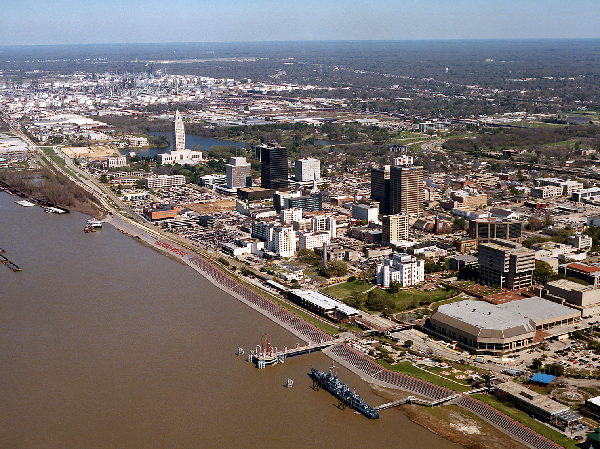

Louisiana Travel Guide
Feast on Cajun cuisine, hear jazz in New Orleans' French Quarter, and explore Louisiana's bayous, swamps, and vibrant Mardi Gras culture.
Louisiana Map
Places to See in Louisiana
New Orleans
City located along the Mississippi River in the southeastern region of Louisiana is the most populous city in Louisiana and is world-renowned for its distinctive music, Creole cuisine, unique dialects, and its annual celebrations and festivals, most notably Mardi Gras
Greater New Orleans Area
Dynamic metropolitan region blending historic neighborhoods, celebrated cuisine, vibrant music traditions, wetlands, and waterfront communities.
Cajun Country
Culturally rich region known for its distinctive French-Acadian heritage, traditional music, celebrated cuisine, and scenic bayous, prairies, and wetlands.
Plantation Country
Historic river region renowned for grand antebellum estates, oak-lined avenues, sugar plantations, and stories that shaped Louisiana's cultural heritage.

Michael Maples, U.S. Army Corps of Engineers, Public domain, via Wikimedia Commons; Image Size Adjusted

Baton Rouge
Capital city of Louisiana on the eastern bank of the Mississippi River, and second-largest city in Louisiana after New Orleans and is the middle ground of South Louisiana cultures, having a mix of Cajun and Creole
Landmarks and Landscapes
Overview
Louisiana is a Deep South state of about 4.6 million people, famous for its Creole and Cajun cultures, music, food, and festivals. Baton Rouge is the capital and New Orleans is the best-known city, though the state's civil divisions are parishes rather than counties. It was named for King Louis XIV of France.
Visitors come for New Orleans, with the French Quarter, jazz, Mardi Gras, and beignets, and for Cajun Country, where zydeco, crawfish, and French-speaking culture thrive. They also tour the Mississippi River mansions of Plantation Country, explore the bayous and swamps by boat, and visit sites such as Poverty Point, a UNESCO World Heritage Site.
Geography
Louisiana was largely built by sediment washed down the Mississippi River. The state has two parts: the uplands and hills of the north, and the alluvial plain, marshes, and bayous of the south. The coast has some of the most productive wetlands in the country, though they are eroding quickly. Driskill Mountain, at 535 feet (163 m), is the highest point, and the Mississippi, Atchafalaya, Red, and Ouachita Rivers cross the state, with the Gulf of Mexico forming the southern edge.
History
Caddo, Choctaw, Houma, Chitimacha, and many other peoples lived here, and the earthworks at Poverty Point are more than 3,000 years old. France claimed the territory in 1682 and founded New Orleans in 1718, and Spain ruled it from 1763 to 1800. The United States acquired it in the 1803 Louisiana Purchase, and Louisiana became the 18th state in 1812. Acadian exiles arrived in the 1760s and became the Cajuns, while Creole, African, Spanish, and later Italian and Vietnamese communities shaped the state's culture. Hurricane Katrina devastated the Gulf Coast in 2005.
New Orleans
New Orleans, founded by the French in 1718, is one of the most distinctive cities in the United States, famous for its music, food, architecture, and festivals. The French Quarter has wrought-iron balconies, Jackson Square, St. Louis Cathedral, Cafe Du Monde beignets, and the jazz clubs of Bourbon Street and Preservation Hall. Jazz was born in the city, and Congo Square and Louis Armstrong Park recall its roots. Beyond the Quarter, visitors ride the St. Charles Streetcar past the mansions of the Garden District, walk through the historic St. Louis Cemetery and its above-ground tombs, and tour the National WWII Museum, City Park, and the New Orleans Museum of Art.
Mardi Gras
Mardi Gras ("Fat Tuesday") is the climax of the Carnival season, which begins on January 6, the Epiphany, and ends the day before Ash Wednesday. New Orleans hosts the best-known celebration in the country, with more than a dozen parades rolling in the days before Fat Tuesday, including the krewes of Rex, Zulu, Bacchus, Endymion, and Orpheus. Floats, marching bands, and costumed riders throw beads, doubloons, and trinkets, and traditional colors of purple, green, and gold stand for justice, faith, and power. King cake is a Carnival tradition, and visitors can learn how the floats are built at Mardi Gras World. Other Louisiana cities, including Lafayette, Baton Rouge, and Lake Charles, hold their own Mardi Gras celebrations, including the rural Courir de Mardi Gras.
Plantation Row
The Mississippi River between New Orleans and Baton Rouge is lined with sugar plantations, a stretch known as Plantation Country or River Road. The great houses tell the story of the antebellum South, with its wealth built on the labor of enslaved people. Oak Alley Plantation is famous for its quarter-mile avenue of 28 live oaks, Houmas House has formal gardens and a mansion, and Laura Plantation is a Creole sugar plantation with tours based on family records. Whitney Plantation is the only plantation museum in Louisiana devoted primarily to the history of slavery, with memorials and exhibits, and Destrehan and St. Joseph are also open for tours. Many of the sites are within an hour of New Orleans.
Mississippi Delta, Swamps, and Bayous
Louisiana's landscape was built by the Mississippi River, which carries sediment down to the Gulf of Mexico and has created a vast delta of marshes, bayous, and swamps. The Atchafalaya Basin is the largest river swamp in the United States, with cypress and tupelo trees draped in Spanish moss, and it can be explored by boat from swamp tour operators or the Atchafalaya National Wildlife Refuge. Near New Orleans, Honey Island Swamp and the Barataria Preserve, part of Jean Lafitte National Historical Park, offer airboat rides, alligators, herons, and boardwalk trails. Fontainebleau State Park and Grand Isle State Park show off the lakes and coast. The delta's wetlands are among the most productive and threatened in the country, losing land to erosion, subsidence, and rising seas.
Cajun Country
Cajun Country, also called Acadiana, covers southern Louisiana west of New Orleans and along the Gulf Coast, and it is the heartland of the descendants of French-speaking Acadians exiled from Canada in the 1700s. Lafayette is the capital of the region, with Vermilionville, a living history museum, the Acadian Cultural Center, and live zydeco and Cajun music most nights of the week. Nearby, Acadian Village and the Longfellow-Evangeline State Historic Site recall Acadian history, Shadows-on-the-Teche is a plantation in New Iberia, and the Tabasco Factory on Avery Island and Jungle Gardens are popular stops. Lake Fausse Pointe State Park and Palmetto Island State Park offer paddling and camping.
Cajun and Creole Culture and Cuisine
Louisiana's food is among the most distinctive in the country, shaped by French, Spanish, African, Native American, and Caribbean traditions. Creole cuisine, centered on New Orleans, is the cooking of the city's townspeople and uses rich sauces and tomatoes in dishes such as gumbo, jambalaya, shrimp remoulade, red beans and rice, and oysters Rockefeller. Cajun cooking, from rural Acadiana, is more rustic, with roux-based gumbo, boudin, andouille sausage, crawfish etouffee, and boiled crawfish in the spring. Po'boys, muffulettas, beignets, bananas Foster, and pralines are classic New Orleans treats, and the Louisiana cuisine page covers dishes and where to find them. The cultures also live on in music, including jazz, zydeco, and Cajun fiddle, in the Cajun French and Louisiana Creole languages, and in festivals such as the Jazz and Heritage Festival, the Festival International de Louisiane, and Cajun Mardi Gras.
National Protected Areas
Louisiana's national park sites include Cane River Creole National Historical Park, which preserves plantations and Creole culture near Natchitoches, and Jean Lafitte National Historical Park and Preserve, which protects wetlands and cultural sites near New Orleans. The state is also home to the New Orleans Jazz National Historical Park, the Poverty Point National Monument, and several national heritage areas, including the Atchafalaya and the Cane River National Heritage Areas.
State Parks and Historic Sites
Louisiana operates 22 state parks and 17 historic sites, including Fontainebleau State Park on Lake Pontchartrain, Chicot State Park with its large cypress lake, and Lake Fausse Pointe State Park in the Atchafalaya Basin. State historic sites include the Port Hudson battlefield, Marksville, and Fort Jesup. Visitors also enjoy swamp tours at Lake Martin and Honey Island Swamp, the Tunica Hills, and wildlife management areas such as the Atchafalaya and Sherburne.
Seasons and When to Visit
Fall through spring is the best time to visit, with mild weather and the greatest number of festivals. Carnival season begins January 6 and builds to Mardi Gras, and spring brings the New Orleans Jazz & Heritage Festival and crawfish season. Summer is hot, humid, and storm-prone, and hurricane season runs from June to November. Winter is mild and a good time for swamp tours and birdwatching along the Gulf Coast flyway.
This article uses material from the Wikipedia article "Louisiana", which is released under the Creative Commons Attribution-Share-Alike License 3.0. Additional information was drawn from National Park Service, Louisiana State Parks, and Louisiana Office of Tourism.